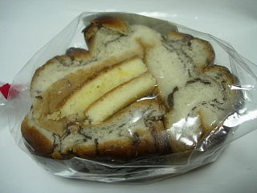
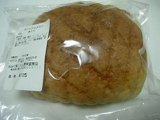

川上開栄堂のチョコロール
更新日 : 2009/10/25
雲州ひらた大物産展の中ノ島会場で販売していた「川上開栄堂」さんのパンです。川上開栄堂さんって、初めて見ました。何処にお店があるんでしょうか？

ちょっと豪快な感じがするチョコロールです。
コンガリと焼けたパンとチョコがよくあってますね。パンの真ん中にはケーキのスポンジとクリームが入ってました。大きいパンですが、外と中で味が違うので飽きずにいただけました。中が甘いのっていいですね。

こっちはデニッシュメロンパンです。お店の人がお勧めですって言ってました。